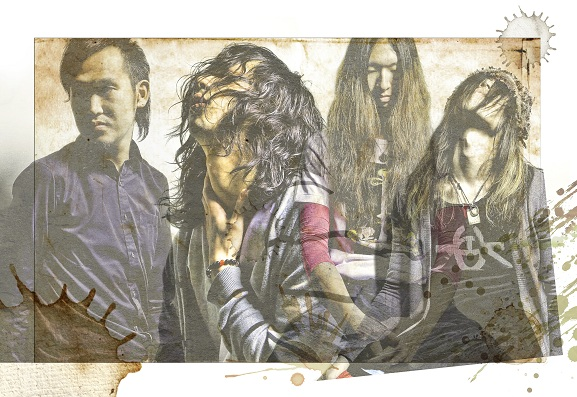

Jeepta

Member
石井 卓(Vo/Gt)
choro(Gt)
Follow @Jeepta_choro
サトウヒロユキ(Ba)
Follow @Jeepta_sato
小笠原 大悟(Drums)
Follow @Jeepta_daigo
ツイートする
Profile
2004年12月結成。
ライブを中心に活動し、ROCK IN JAPAN FESTIVAL、ARABAKI ROCK FEST.など大型フェスにも多数出演。
Comment
[ロックの夜明け #01]に出演させて貰って以来、3年ちょっとぶりに出演させて頂きます。
その間も小宮君とは飲んだり語ったり語ったり飲まれたり。
そんなあれこれ期間を経て、それぞれの成長したアレをQueって空間にぶちまけアレする訳ですね。
そりゃあ、爆発的なアレになるんでしょう。非常に楽しみです。
Ba.サトウヒロユキ
YouTube
［ グリム ］
［ 日進月歩 ］
Link
Official Web Site
その間も小宮君とは飲んだり語ったり語ったり飲まれたり。
そんなあれこれ期間を経て、それぞれの成長したアレをQueって空間にぶちまけアレする訳ですね。
そりゃあ、爆発的なアレになるんでしょう。非常に楽しみです。
Ba.サトウヒロユキ